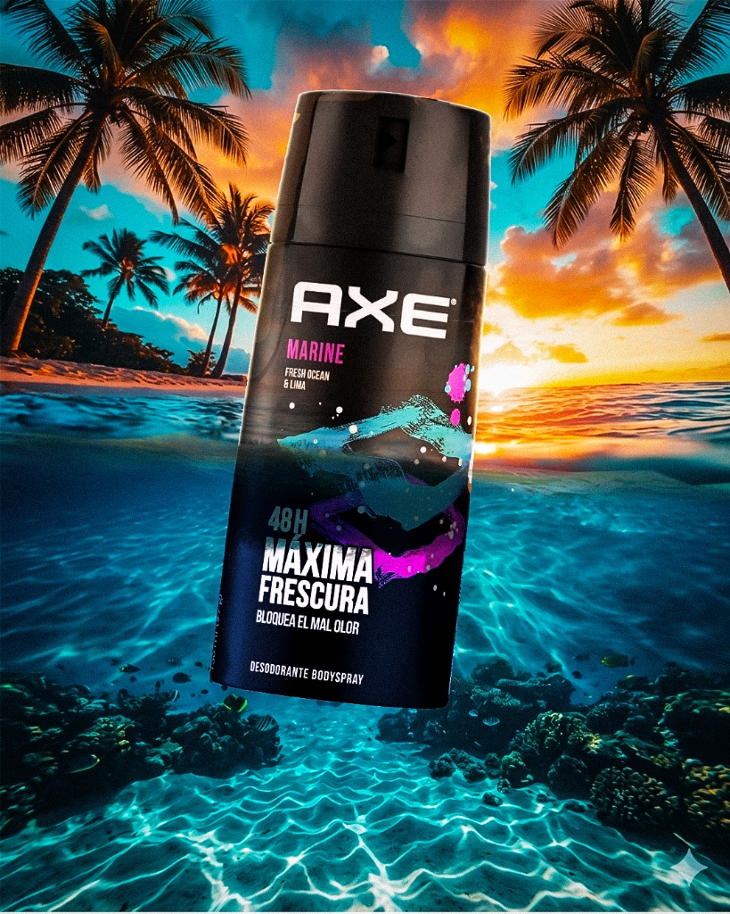
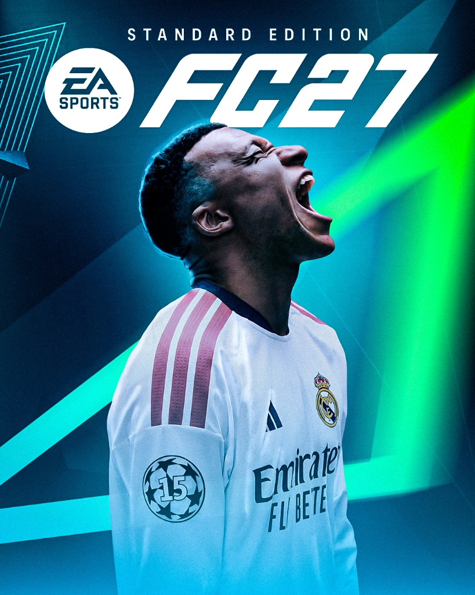
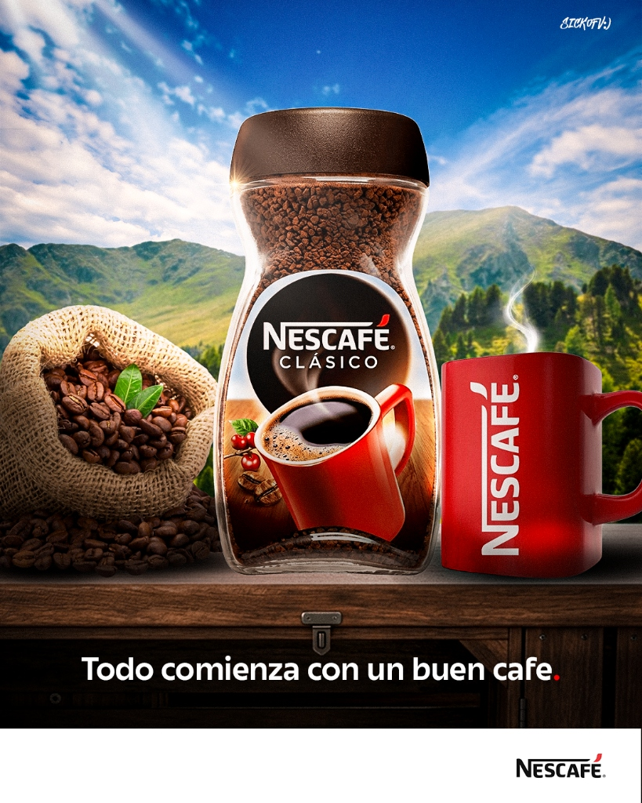
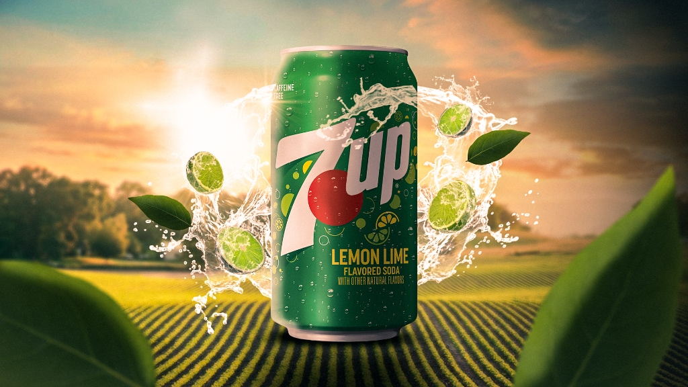
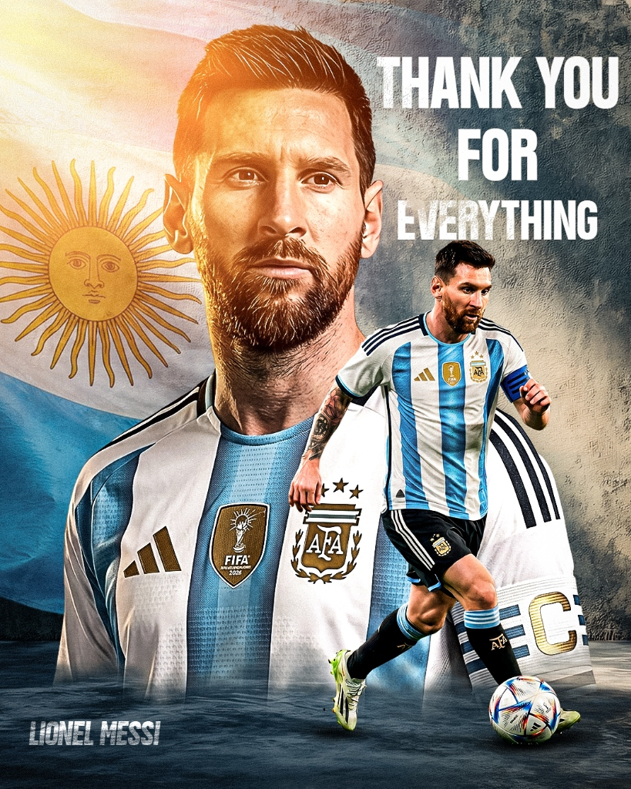
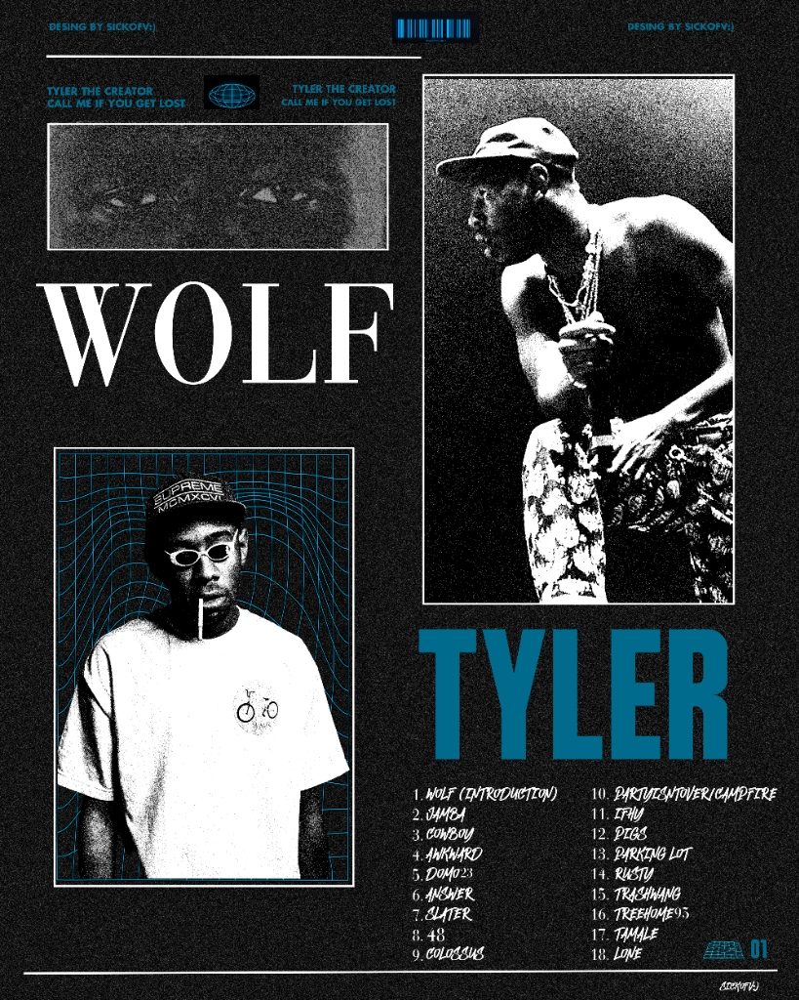

Identidad Animada de Marca
Paquete de animaciones para lanzamiento: logo, transiciones y bumpers.
- After Effects
- Illustrator
Jeyko Ronquillo — Diseñador Creativo
Diseño Gráfico · Edición de Video · Motion Graphics
Trabajos seleccionados
Paquete de animaciones para lanzamiento: logo, transiciones y bumpers.
Color grading galáctico, edición narrativa y mezcla de audio para cortometraje fan-made de Star Wars.

Composición fotográfica de alto impacto para lanzamiento en redes sociales.

Portada editorial cinematográfica con identidad visual de alto impacto.

Pieza publicitaria naturalista que conecta el producto con su origen y calidez.

Key visual de campaña digital que captura frescura y energía natural.

Composición editorial cinematográfica que captura el legado del astro del fútbol.

Pieza experimental con estética vibrante que refleja el universo artístico de Tyler.
¿Qué ofrezco?
Identidades visuales, piezas editoriales y material gráfico para medios digitales e impresos.
Post-producción profesional, color grading y audio mixing para contenido audiovisual de alto impacto.
Animaciones 2D, intros, bumpers y piezas motion para branding y redes sociales.
Sobre mí
Diseñador creativo especializado en Diseño Gráfico, Edición de Video y Motion Graphics. Creo piezas visuales que conectan marcas con personas a través de la emoción y la estética.
Cada proyecto comienza con una pregunta: ¿qué debe sentir quien lo vea?
Hablemos¿Tienes un proyecto?
Disponible para proyectos freelance, colaboraciones y oportunidades creativas.
jeykovisuals@gmail.com